2014持ち運んでるものリスト
概要
t_wadaさんの鞄ばなし記念。
なんとなく纏めとく。
傘とかはマジで便利なのでオヌヌメ。
package
GERRY GE3004 デイパック M 【14L】// 軽い、口がでかいので割となんでも入る、防水、袋状なのでなんでも放り込んでおける、など。
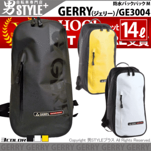
ただし、経年でチャックがぶっ壊れるバグがある。防水なのでまず直せない。
年々スペックが上がっていくので今年の奴はいいかもしれない。
include
/PCバッグ // 衝撃吸収用。
MBA 11inch 2013 // 軽い。
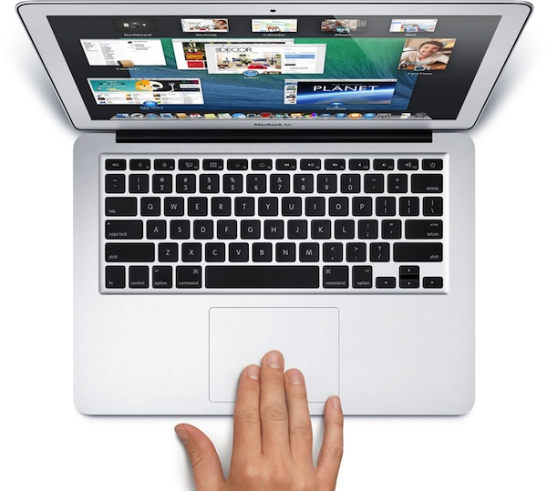
/iPadバッグ // 衝撃吸収用。
iPad Air 2013 // 紙のノート類すべてと引き換えに入れた。
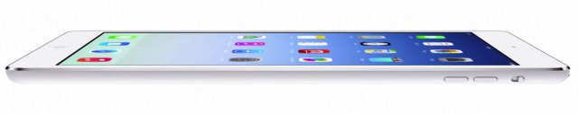
/ケーブル缶 // かさばる小物は携帯用タバコ吸い殻入れに入れると捗る。タバコ吸わない。
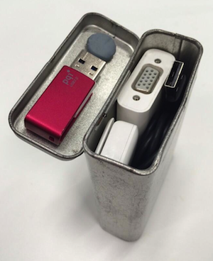
以下中身
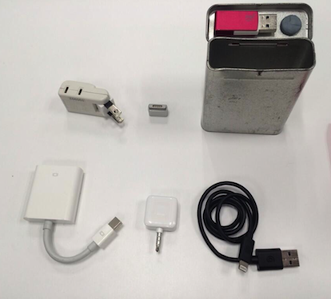
Lightning Cable // 最低限必要。
電源タップ // 1口 -> 2口 という最小のもの。
Square // 決済のアレ。
VGA変換 // 急なプレゼンとか、勉強会とかで発表するときに割と使う。
USBメモリ 16G // 緊急用。フタに着いてる。
ねりけし // デッサン用のもの。
MagSafeコンバータ // だいぶ使わなくなったけど万一に備えて。
MBA電源アダプタ // 延長ケーブルは無し。
Micro USB Cable // 10cmくらいのやつ。
傘 Ofess is.a.brella // 雨が降ってても折り畳めばプラスチックのパックに仕舞える。
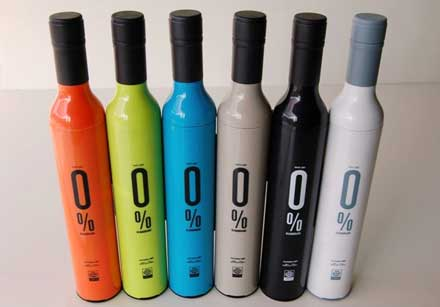
/カバンの中身 // ペンを入れるところがあって、カバンの中で位置が固定されるので楽。いらないポケットは空のまま。
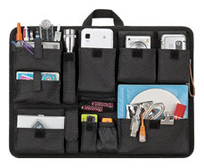
http://www.kabannonakami.com/item/b4/b4.html
以下中身
ボールペン x 3 // 4色のもの。ドカッと買っておくと良い。予備だらけ。
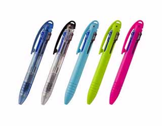
ペンカッター // 割と使う。
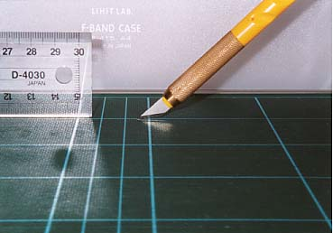
折りたたみはさみ // 使う。ペンの太さになるので、ペン入れ部分にさしておけるのが良い。
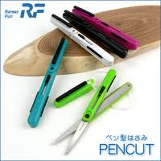
iPad用ペン // iPad AirでのPaperが快適すぎて、あんまつかわない。まれによくつかう。
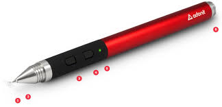
シャーペン // 極まれにつかう。
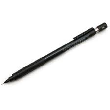
他、財布、パスポートとか。
シメて2kgくらい。